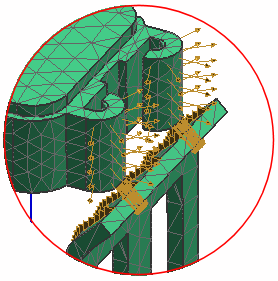

使用仿真导航器来浏览模型组成。
模型中包含一个双体部件，类似于一个咬合插头连接器，将使用大位移非线性解算方案来仿真这个装配。
解算方案类型是 NX Nastran 结构、高级非线性(ADVNL 601, 106)。
在仿真导航器中，解算方案的仿真对象容器中列出了两个面接触对象。
接触符号在图形窗口中高亮显示，接触的源面位于插头上，目标面位于插座上。

这些接触仿真对象构建了插头与插座接触的区域。